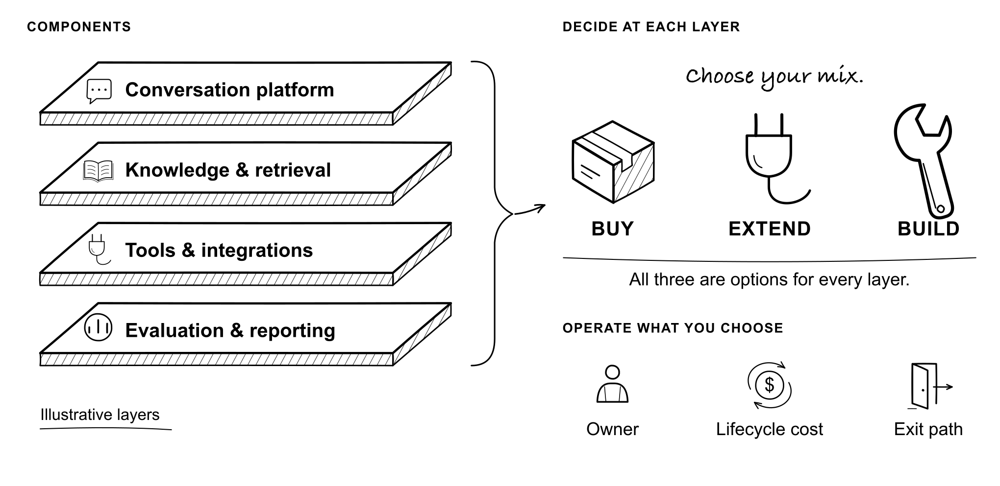

Make the right call
Build versus buy, vendor exit risk, and the organizational resistance that can stop progress.
Second Edition · November 2026
How to Deploy AI in Customer Support Without Breaking Trust
Free to read, download, and put to work.

29 chapters
10 illustrations
80 practical prompts
2 AI skills
For returning readers
Six new chapters, expanded playbooks, and lessons from more use cases, conversations, research, and work with humans and AI.
Build versus buy, vendor exit risk, and the organizational resistance that can stop progress.
Customer agents, action receipts, recovery, and evaluation seven and thirty days after the answer.
Collected field notes, fourteen templates, ten drawings, and 80 prompts for your own decisions.
Read it. Then work with it.
For support leaders at API, developer-tool, and B2B companies—and the executives who work with them.
Install the book as a skill. Your assistant can use its chapters and templates to help compare vendors, design evaluations, or rehearse a difficult launch.
Start with Appendix GHear the conversation
I joined Episode 4 to talk about reducing customer pain and how support work is changing. That conversation helped shape this edition.